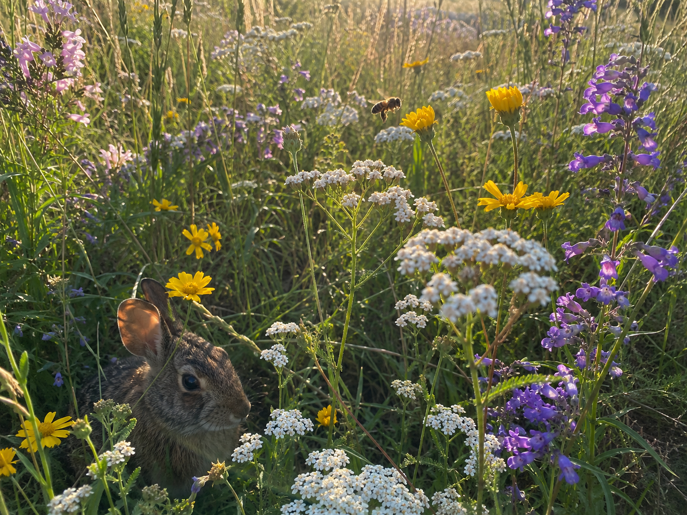
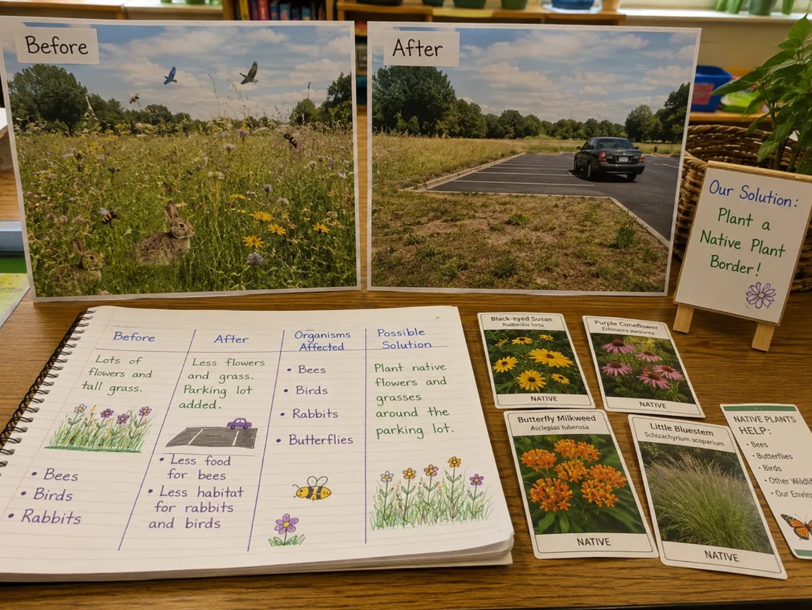

Hold this question as you work. By the end, you'll be able to answer it using real evidence.
Start here. Learn the words you will use today.
Imagine a field full of wildflowers. Bees buzz from flower to flower. Rabbits sit in the tall grass. Now imagine half that field is paved over for a parking lot. Something has changed — for people and for the animals.
There are no wrong observations here. Scientists start every investigation by noticing carefully. We'll return to your ideas at the end.
Before you start the investigation, learn these words. You'll use them to explain your thinking. Tap each card to flip it and read the definition.
Copywork: Copy this sentence carefully into your science notebook: "A good scientist studies the evidence before deciding what should change."
Now learn the main science idea.
What Is a Case Study?
A case studycase studyA close look at one real situation to learn from it. is a close look at one real situation. Scientists pick one place, one event, or one ecosystem. They study it carefully to understand what changed and why.
A case study asks: What happened here? What caused it? What might help?
When Humans Change a Place
People change ecosystems when they build, farm, travel, or throw things away. Some of those changes make survival harder for other organisms.
When a habitathabitatThe place where an organism lives and finds what it needs to survive. changes, organisms may lose food, water, shelter, or space. That's when the population in that place can change — some leave, some struggle, and some can't survive at all.

Solutions Need Evidence
People can also design solutionssolutionA way to reduce or fix a problem. A good solution is based on evidence. that help ecosystems recover. A good solution is based on evidenceevidenceInformation that supports or explains an idea. — not just guessing. It should reduce harm and help organisms find what they need again.
Tap each part of the case study process to learn about it.
Human actions can change ecosystems in ways that make survival harder for organisms. Scientists study one situation at a time — and use evidence to decide what solutions might help.
Now test the idea yourself.

📋 Read This First
Before: A meadow had tall grass, wildflowers, insects, rabbits, and birds. Bees gathered nectar from the flowers. Rabbits hid in the tall grass. Birds built nests nearby.
What changed: Part of the meadow was paved to build a parking lot. About half the grass and flowers were removed.
After: Fewer flowers grew near the edge. Bees had less food. Rabbits had fewer places to hide. Some birds stopped nesting there.
Proposed solution: Plant a border of native wildflowers and grasses along the edge of the parking lot to restore some habitat.
Work through each step in your science notebook.
Set Up Your Chart: Copy the chart below into your notebook. Leave the data cells blank — you'll fill them in as you work through the case study.
| Before the Parking Lot | After the Parking Lot | Organism Affected | Possible Solution |
|---|---|---|---|
List Ecosystem Changes: From the case study, list three things that changed in the meadow after the parking lot was built. Use your chart to organize your ideas.
Choose Two Organisms: Pick two organisms from the case study — bees, rabbits, or birds. For each one, explain what resourceresourceSomething an organism needs to survive — like food, water, shelter, or space. they lost and how that made survival harder.
Draw a Cause-and-Effect Diagram: In your notebook, draw an arrow diagram showing the human action and what it caused. Label at least four things: the human action, the habitat change, one organism affected, and a missing resource.
Evaluate the Solution: The proposed solution is to plant native wildflowers along the parking lot edge. Write one sentence explaining why this might help. Write a second sentence explaining one thing it might not fix. Use evidenceevidenceInformation that supports or explains an idea. Scientists use evidence before drawing conclusions. from the case study.
Being specific matters. Good scientists don't just think "it changed" — they think about what changed and why it matters.
Tell the story of the meadow — what it was like before, what changed, and what happened to the organisms there. Use your notes and chart to help you explain it clearly.
Think through each question on your own. Write your answers in your science notebook.
Check what you understand.
Show what you learned.
🔍 Part A — Identify and Label
In your science notebook, answer each item using the meadow case study.
🚀 Part B — Short Answer
Answer each question in complete sentences. Use your science vocabulary!
Do you think planting native plants is a good solution for the meadow? What does the evidence tell you?
What do you think?
💡 Start with: "I think planting native plants is a good solution because…"
What evidence from the case study supports your thinking?
💡 Start with: "I know this because in the case study, I observed that…"
Why does your explanation make sense?
💡 Start with: "This makes sense because…"
📚 Try to use at least one of these words in your answer: habitat, evidence, solution, resource
🎨 Part C — Draw & Label
In your notebook, draw the meadow before and after the parking lot. Label at least 5 things across both drawings: flowers, bees, rabbits, parking lot, habitat change, or native plant border.
Submit your work on Canvas using one of these options:
Make sure your submission includes all of these: